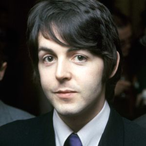
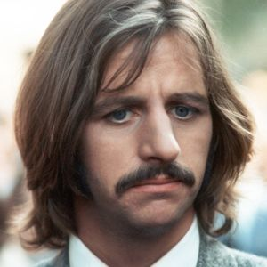

The Beatles
The Beatles were an English rock band that formed in Liverpool in 1960. With members John Lennon, Paul McCartney, George Harrison and Ringo Starr, they became widely regarded as the greatest and most influential act of the rock era. Rooted in skiffle, beat and 1950s rock and roll, the Beatles later experimented with several genres, ranging from pop ballads and Indian music to psychedelic and hard rock, often incorporating classical elements in innovative ways. In the early 1960s, their enormous popularity first emerged as "Beatlemania", but as their songwriting grew in sophistication they came to be perceived as an embodiment of the ideals shared by the era's sociocultural revolutions.
Paul McCartney
Sir James Paul McCartney MBE (born 18 June 1942) is an English singer, multi-instrumentalist, and composer. With John Lennon, George Harrison, and Ringo Starr, he gained worldwide fame as a member of the Beatles, one of the most popular and influential acts in the history of rock music; his songwriting partnership with Lennon is one of the most celebrated of the 20th century. After the band's break-up, he pursued a solo career and later formed Wings with his first wife, Linda, and Denny Laine.
McCartney has been recognised as one of the most successful composers and performers of all time, with 60 gold discs and sales of over 100 million albums and 100 million singles of his work with the Beatles and as a solo artist.[2] More than 2,200 artists have covered his Beatles song "Yesterday", more than any other copyrighted song in history. Wings' 1977 release "Mull of Kintyre" is one of the all-time best-selling singles in the UK. Inducted into the Rock and Roll Hall of Fame as a solo artist in March 1999, McCartney has written, or co-written 32 songs that have reached number one on the Billboard Hot 100, and as of 2014 he has sold more than 15.5 million RIAA-certified units in the United States. McCartney, Lennon, Harrison and Starr received MBEs in 1965, and in 1997, McCartney was knighted for his services to music.
John Lennon
John Ono Lennon, MBE, born John Winston Lennon; (9 October 1940 – 8 December 1980), was an English musician, singer and songwriter who rose to worldwide fame as a founder member of the rock band the Beatles, the most commercially successful band in the history of popular music. With Paul McCartney, he formed a songwriting partnership that is one of the most celebrated of the 20th century.
Born and raised in Liverpool, as a teenager Lennon became involved in the skiffle craze; his first band, the Quarrymen, evolved into the Beatles in 1960. When the group disbanded in 1970, Lennon embarked on a solo career that produced the critically acclaimed albums John Lennon/Plastic Ono Band and Imagine, and iconic songs such as "Give Peace a Chance" and "Working Class Hero". After his marriage to Yoko Ono in 1969, he changed his name to John Ono Lennon. Lennon disengaged himself from the music business in 1975 to raise his infant son Sean, but re-emerged with Ono in 1980 with the new album Double Fantasy. He was murdered three weeks after its release.

George Harrison
George Harrison MBE (25 February 1943 – 29 November 2001), was an English musician, multi-instrumentalist, singer and songwriter who achieved international fame as the lead guitarist of the Beatles. Although John Lennon and Paul McCartney were the band's primary songwriters, most of their albums included at least one Harrison composition, including "While My Guitar Gently Weeps", "Here Comes the Sun" and "Something", which became the Beatles' second-most-covered song.
Harrison's earliest musical influences included Big Bill Broonzy, George Formby and Django Reinhardt; Chet Atkins, Chuck Berry and Ry Cooder were significant later influences. By 1965 he had begun to lead the Beatles into folk rock through his interest in the Byrds and Bob Dylan, and towards Indian classical music through his use of the sitar on "Norwegian Wood (This Bird Has Flown)". He developed an interest in the Hare Krishna movement and became an admirer of Indian culture and mysticism, introducing them to the other members of the Beatles and their Western audience by incorporating Indian instrumentation in their music. After the band's break-up in 1970, Harrison released the triple album All Things Must Pass, from which two hit singles originated. He also organised the 1971 Concert for Bangladesh with Ravi Shankar, a precursor for later benefit concerts such as Live Aid. Harrison was a music and film producer as well as a musician; he founded Dark Horse Records in 1974 and co-founded HandMade Films in 1978.

Ringo Starr
Richard Starkey, Jr., MBE (born 7 July 1940), better known by his stage name Ringo Starr, is an English drummer, singer, songwriter, and actor who gained worldwide fame as the drummer for the Beatles. On most of the band's albums, he sang lead vocals for one song, including "With a Little Help from My Friends", "Yellow Submarine" and their cover of "Act Naturally". He also wrote the Beatles' songs "Don't Pass Me By" and "Octopus's Garden", and is credited as a co-writer of others, such as "What Goes On" and "Flying".
Starr was twice afflicted by life-threatening illnesses during his childhood, and as a result of prolonged hospitalisations, fell behind scholastically. In 1955, he entered the workforce and briefly held a position with British Rail before securing an apprenticeship at a Liverpool equipment manufacturer. Soon afterwards, he became interested in the UK skiffle craze, developing a fervent admiration for the genre. In 1957, he cofounded his first band, the Eddie Clayton Skiffle Group, which earned several prestigious local bookings before the fad succumbed to American rock and roll by early 1958.
Source: Wikipedia